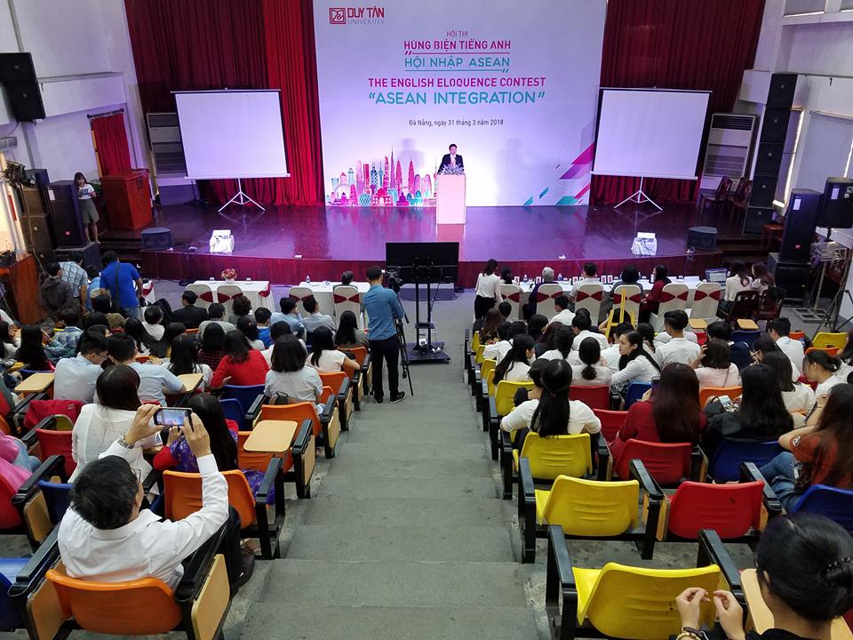
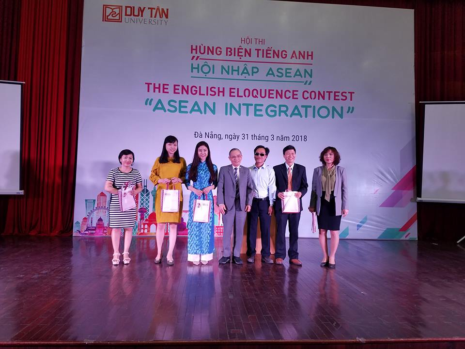

Học sinh Quảng Nam tham gia cuộc thi tiếng Anh Hội nhập ASEAN

Lần cập nhật cuối lúc Thứ hai, 02 Tháng 4 2018 08:44 Viết bởi Administrator Thứ hai, 02 Tháng 4 2018 08:40
(QNO) - Sáng 31.3, tại Đại học Duy Tân (TP.Đà Nẵng) đã diễn ra cuộc thi tiếng Anh "Hội nhập ASEAN" 2018. Cuộc thi được nằm trong khuôn khổ các hoạt động chào mừng hội nghị sinh viên ASEAN 2018 sắp diễn ra tại TP.Đà Nẵng.

Có 6 đội thi đến từ các trường THPT trên địa bàn TP.Đà Nẵng và tỉnh Quảng Nam tham gia, trong đó 3 đội thi của Quảng Nam đến từ các trường THPT chuyên Nguyễn Bỉnh Khiêm, THPT chuyên Lê Thánh Tông và THPT Núi Thành.
Các đội thi trải qua 3 phần thi gồm: chào hỏi; hiểu biết về ASEAN và hùng biện; trả lời câu hỏi với ban giám khảo có nhiều thành viên đến từ các quốc gia ASEAN. Được biết, đội đạt giải nhất sẽ nhận phần thưởng 8 triệu đồng cùng với 1 chuyến Study Tour một nước trong khu vực ASEAN cho 1 thành viên xuất sắc nhất, giải nhì sẽ nhận được 6 triệu đồng, giải ba sẽ nhận được 4 triệu đồng, 3 đội còn lại nhận giải khuyến khích.

Tặng quà cho hiệu trưởng các trường THPT có đội thi tham gia chương trình. Ảnh: Q.T
Cuộc thi nhằm tăng cường kỹ năng nghe và nói tiếng Anh cho học sinh, góp phần nâng cao chất lượng dạy và học bộ môn tiếng Anh trong các trường Titnbk.edu.vnội cho học sinh phát triển và thể hiện khả năng giao tiếp, hùng biện từ đó phát hiện những học sinh xuất sắc để tiếp tục đào tạo, bồi dưỡng tham gia các cuộc thi tầm cỡ quốc gia, khu vực.
QUỐC TUẤN (baoquangnam.vn)
- 19/05/2020 08:06 - Đại học Quốc gia TP HCM chỉ tổ chức 1 đợt thi đánh…
- 05/08/2019 00:00 - Tiếp nhận hồ sơ xét chọn trao học bổng "Tiếp sức đ…
- 18/12/2018 07:41 - Cuộc thi viết thư cho chủ gấu Hãy cho gấu cuộc sốn…
- 13/07/2018 00:00 - Cô học trò mê lịch sử và giấc mơ làm luật sư
- 13/07/2018 00:00 - Trương Nhật Nguyên Bảo đạt điểm xét tốt nghiệp THP…
- itnbk.edu.vn
- 13/03/2018 14:25 - Học sinh Quảng Nam vào bán kết cuộc thi Thực hiện …
- 26/10/2017 00:00 - 58 học sinh vào đội tuyển thi học sinh giỏi quốc g…
- 04/09/2017 00:00 - Mở thêm cơ hội du học
- 13/07/2017 08:44 - Bộ Giáo dục giải đáp hàng loạt câu hỏi nóng trong …
- 12/07/2017 13:30 - Những lưu ý khi điều chỉnh nguyện vọng